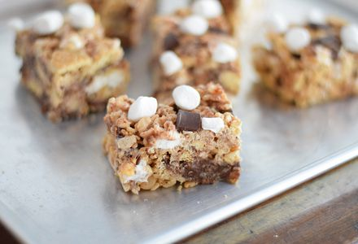

Index
S'mores Rice Krispy

Description
Rice Krispies are easy to make. And making them in the
style of S'mores isn't too hard either! Let's get to it.
Ingredients
- Butter, 4 tablespoons
- Marshmallows, 4 cups
- Marshmallow Bits, 3/4 cups
- Vanilla Extract, 1 teaspoon
- Rice Krispies, 3 cups
- Golden Grahams, 2 cups
- Chocolate Chips, 3/4 cups
Steps
- Mix together the rice krispies, Golden Grahams,
Marshmallow Bits, and chocolate chips. Set aside.
- Melt the butter in a saucepan over medium heat.
- Turn the heat down to the lowest setting and add
the marshmallows.
- Stir until almost totally melted, then add the
vanilla extract. Continue stirring until the
marshmallows are all melted, slow and steady.
- Once fully melted, take them off heat and pour
over the rice krispy mixture. Stir lightly to
combine.
- Dump into a lightly greased 9x9 pan and let sit
for 5 minutes. Then go and lightly press the mixture
into the pan with greased hands.
- Allow then to cool and set about 20 minutes.
- Enjoy!
The original recipe can be found at
http://mallowandco.blogspot.com/2013/06/s-rice-krispy-treats.html